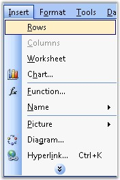

XlsIO has support for dynamically inserting rows and columns into a new/existing worksheet. Inserting rows/columns will allow the other rows/columns to move down/right by one step, and accomodate the new rows/columns.
MS Excel allows to insert rows/columns through the Insert menu option.

Figure 58: Insert Menu in Excel
Following code example illustrates inserting rows/columns.
|
[C#]
// Inserting Rows. sheet.InsertRow(3);
// Inserting Columns. sheet.InsertColumn(2); |
|
[VB.NET]
' Inserting Rows. sheet.InsertRow(3)
' Inserting Columns. sheet.InsertColumn(2) |
XlsIO also allows you to insert multiple rows and columns. The following code example illustrates this.
|
[C#]
// Inserting multiple columns. sheet.InsertColumn(colIndex,colCount);
' Inserting multiple rows. sheet.InsertRow(rowIndex,rowCount); |
|
[VB.NET]
' Inserting multiple columns. sheet.InsertColumn(colIndex,colCount)
' Inserting multiple rows. sheet.InsertRow(rowIndex,rowCount) |
You can also preserve the previous or next row/column formats by using XlsIO. Following code example illustrates this.
|
[C#]
sheet.InsertRow(rowIndex, count, ExcelInsertOptions.FormatAsBefore); |
|
[VB.NET]
sheet.InsertRow(rowIndex, count, ExcelInsertOptions.FormatAsBefore) |
 Note: Here row and column index of Insert methods
are "one based".
Note: Here row and column index of Insert methods
are "one based".
Following table lists the options provided by the ExcelInsertOptions enumerator.
|
Member name |
Description |
|
FormatAsBefore |
Indicates that after insert operation, inserted rows/columns must be formatted as row above or column left. |
|
FormatAsAfter |
Indicates that after insert operation, inserted rows/columns must be formatted as row below or column right. |
|
FormatDefault |
Indicates that after insert operation, inserted rows/columns must have default format. |